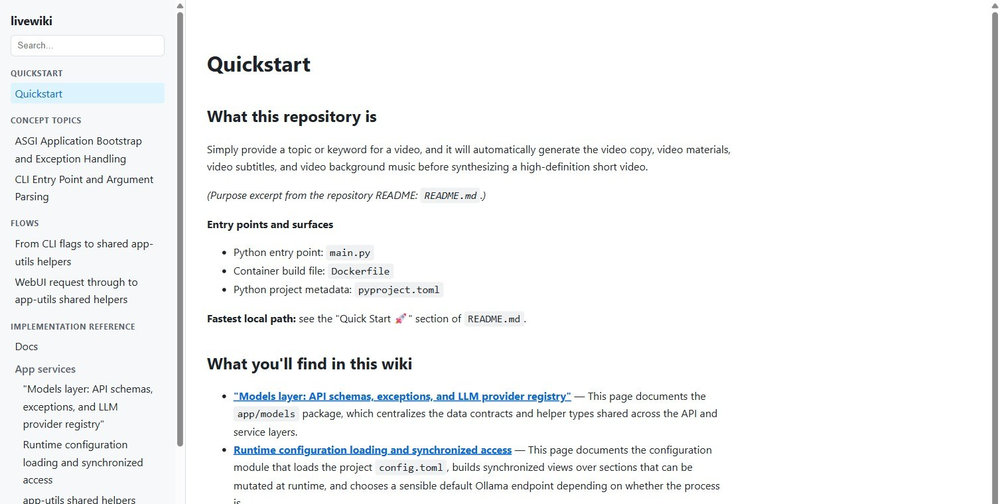

livewiki
Code-anchored documentation that knows when it is stale.
Turns a repository into a Markdown wiki where every code reference is anchored to a real indexed symbol. An LLM writes the prose; livewiki plans the pages, runs deterministic anti-hallucination checks on what the model wrote, tracks which anchored symbols drifted, and preserves your edits.